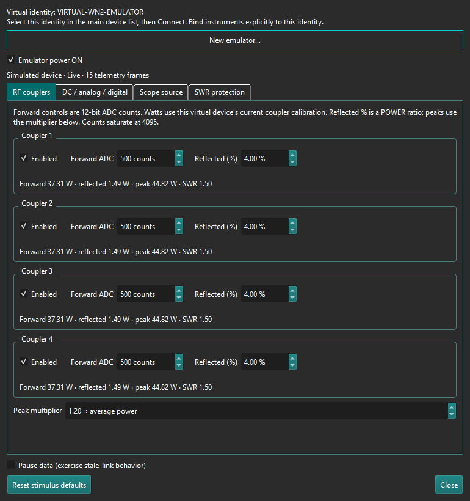
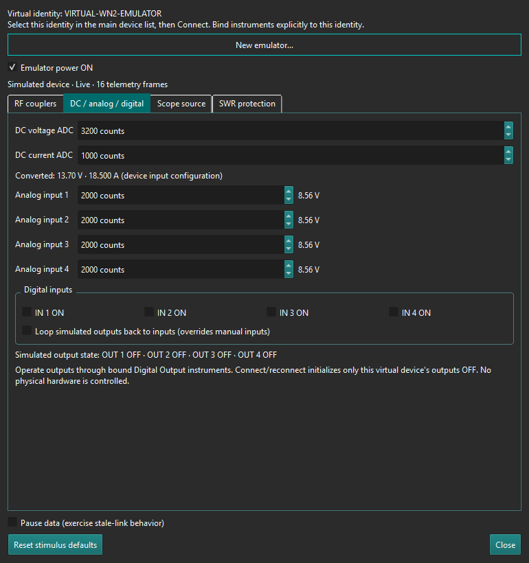
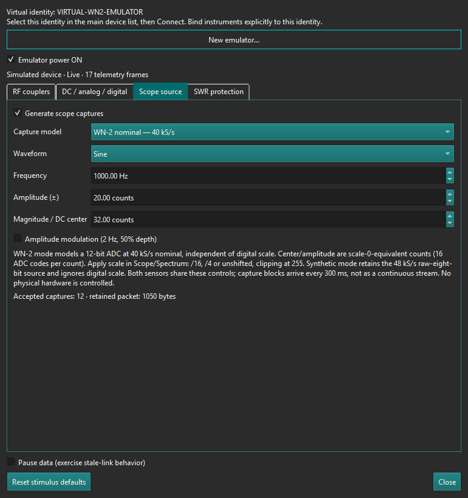
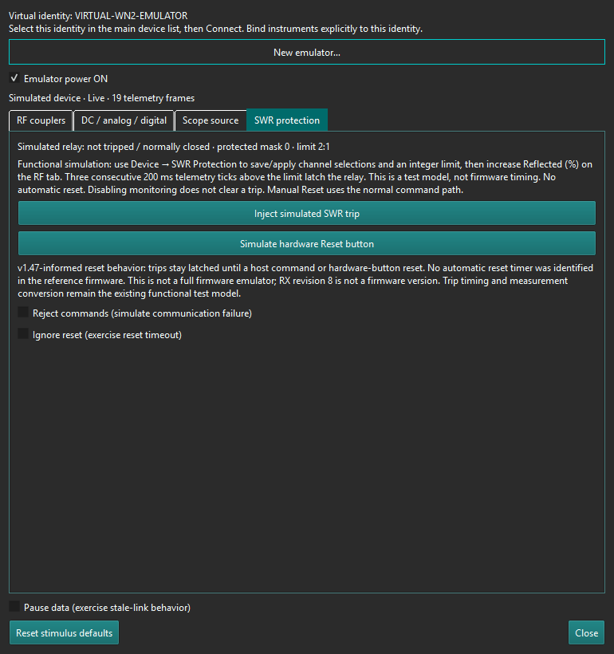

Raw Data Emulator and multiple instances
On this page
- Practice without hardware
- Change the simulated readings
- Scope and protection practice
- More than one emulator
- Power, pause and close
Practice without hardware
The WN-2 Raw Data Emulator is a simulated meter for learning layouts and testing displays. Its readings are generated in the computer, not measured RF.
- Open Diagnostics → WN-2 Raw Data Emulator.
- In the main device list, select VIRTUAL-WN2-EMULATOR and press Connect.
- Assign your practice instruments to that exact Device identity.
- Look for Live and an increasing telemetry-frame count in the emulator window. Opening its window or checking Power ON is not a separate Connect action. Connect each emulator separately, just as you connect physical devices separately.

Simulated RF controls for each coupler. Select image to enlarge.

Change the simulated readings
On RF couplers, enable the desired channels and change Forward ADC, reflected percentage and peak multiplier. ADC counts are the emulator's raw input level; the application converts them through the selected coupler settings. Reflected percentage is a power percentage. On DC / analog / digital, change input values to exercise those instruments. Digital loopback can make simulated outputs appear at the simulated inputs. None of these controls operates a physical WN-2.

Practice voltage, temperature and digital input displays here. Select image to enlarge.

Scope and protection practice
Enable a Scope source and choose waveform settings. The normal WN-2 simulation uses nominal 40 kS/s; the optional 48 kS/s synthetic source is a separate test choice. It is not the computer audio output.

Simulated waveform controls. Select image to enlarge.

Configure and Apply protection to the virtual device before expecting a threshold trip. The protection tab also provides trip/reset test controls. To test Smart Reset, remove simulated RF on every channel that is preventing the five-second countdown.

Protection test controls avoid needing repeated physical high-SWR conditions. Select image to enlarge.

More than one emulator
Choose New emulator to create another identity, such as VIRTUAL-WN2-EMULATOR-2. Select it in the toolbar and Connect. Reassign copied instruments to it. Each instance has independent stimuli and settings.
Power, pause and close
Power OFF simulates loss; ON makes the device available again. Automatic recovery must be enabled if you want it to reconnect after loss. Pause data simulates stale readings. Closing an emulator window disconnects that instance; minimize it to keep it running while working elsewhere.
Help home · RF StateSide · RayWn2App operator guide